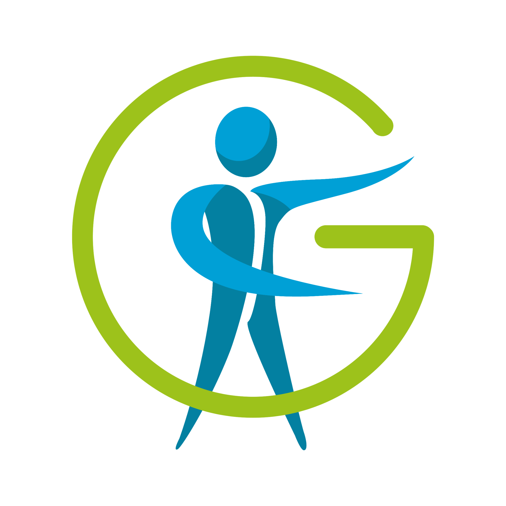

01
Você sente dor e isso atrapalha sua rotina
Dores na coluna, ombro, joelho, quadril, tornozelo e outras queixas musculoesqueléticas que dificultam tarefas do dia a dia.
Rotina • Movimento • AVDsFisioterapia online individualizada para quem quer reduzir limitações, recuperar capacidade e voltar às atividades que fazem parte da sua vida — com orientação profissional e acompanhamento de perto.
Antes de pensar em exercícios, eu quero entender o que está acontecendo, o que está limitando você e quais atividades você quer voltar a realizar com segurança e confiança.
O acompanhamento é indicado para situações em que a avaliação e a orientação fisioterapêutica podem ser realizadas com segurança e qualidade por videochamada.
Dores na coluna, ombro, joelho, quadril, tornozelo e outras queixas musculoesqueléticas que dificultam tarefas do dia a dia.
Rotina • Movimento • AVDsPara quem precisa recuperar confiança, capacidade e controle para retornar progressivamente à academia, corrida ou prática esportiva.
Treino • Corrida • EsporteOrientação e progressão de exercícios de acordo com a fase de recuperação e com aquilo que você precisa voltar a fazer.
Reabilitação • Função • ProgressãoMobilidade, força, controle e condicionamento podem ser trabalhados de forma individualizada, respeitando seu nível atual.
Mobilidade • Força • Qualidade de vidaO atendimento online facilita a continuidade do cuidado e permite adaptar as orientações à sua rotina, ao seu ambiente e aos recursos que você realmente tem disponíveis.
Praticidade • Individualização • AcompanhamentoImportante: nem todo quadro é adequado para atendimento remoto. A indicação é feita individualmente e, quando houver necessidade de avaliação presencial ou de outro profissional, você será orientado.
Um processo simples, profissional e individualizado.
Conte o que está sentindo, há quanto tempo e o que gostaria de voltar a fazer.
Conversamos sobre histórico, sintomas, rotina, objetivos e realizamos uma avaliação funcional compatível com o atendimento remoto.
Definimos objetivos e estratégias de cuidado de acordo com sua condição e contexto.
Você recebe orientações e exercícios e acompanha sua evolução ao longo das sessões.
Se a situação exigir avaliação presencial ou outro profissional, você será orientado adequadamente.

FisioterapiaSou fisioterapeuta, pós-graduado em Fisioterapia Traumato-Ortopédica e pós-graduado em Fisioterapia Esportiva, com atuação em traumato-ortopedia e fisioterapia esportiva, com experiência clínica no cuidado de pessoas com dores, limitações funcionais e demandas relacionadas ao movimento.
Minha abordagem parte de uma avaliação individualizada e busca transformar a fisioterapia em um processo claro, progressivo e conectado ao que realmente importa: sua função, sua rotina e seus objetivos.
Seu histórico, sintomas, rotina e objetivos fazem parte da tomada de decisão.
Você entende por que cada estratégia está sendo utilizada e como aplicá-la.
O plano pode ser ajustado conforme sua resposta e evolução.
O objetivo é recuperar capacidade e confiança para as atividades que fazem parte da sua vida.
Os exemplos abaixo são ilustrativos e representam objetivos comuns de quem procura fisioterapia. Cada evolução depende do quadro e da resposta individual ao tratamento.
“Quero conseguir fazer minhas atividades do dia a dia sem ficar pensando na dor o tempo todo.”
Autonomia • AVDs • Menos limitação“Quero voltar a treinar e sentir que meu corpo está preparado para aumentar a carga aos poucos.”
Treino • Força • Confiança“Quero recuperar minha capacidade de me movimentar melhor e ter mais qualidade de vida.”
Movimento • Função • Qualidade de vidaSe ainda ficou alguma dúvida, você pode falar comigo diretamente pelos canais de contato.
Não necessariamente. Caso você tenha exames ou outros documentos relacionados ao seu quadro, eles podem ser considerados durante a avaliação.
Por videochamada, conversamos sobre seu histórico, sintomas, limitações, rotina e objetivos e realizamos uma avaliação funcional compatível com o atendimento remoto.
Não. As estratégias são adaptadas ao que você tem disponível e aos objetivos definidos no acompanhamento.
Pode ser adequada em diferentes etapas e condições, desde que o atendimento remoto seja seguro e eficaz para o caso. Quando a avaliação presencial for indispensável, isso será orientado.
Depende do seu quadro, dos objetivos e da evolução. O acompanhamento é individualizado.
Se houver necessidade de avaliação presencial ou encaminhamento para outro profissional, você receberá essa orientação.
Os valores e as formas de pagamento são informados pelo WhatsApp, de acordo com a modalidade de atendimento.
Me conte o que está acontecendo, quais atividades estão sendo afetadas e o que você gostaria de voltar a fazer. A partir disso, podemos conversar sobre a melhor forma de acompanhamento.